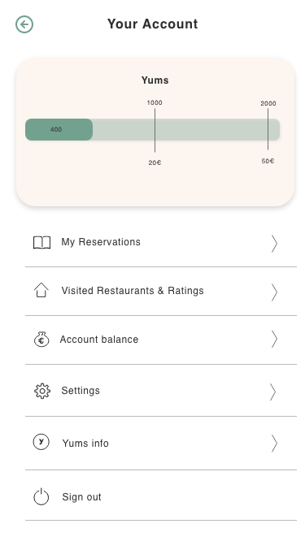
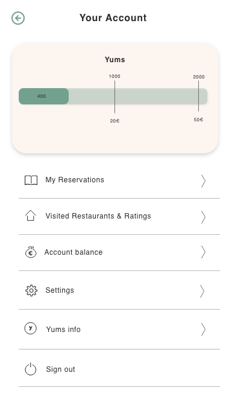
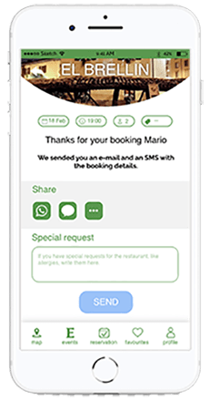
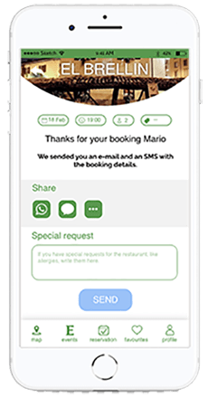

Professor: Marco Catani
Team players: Rujuta Pande &
Guiseppe Mete

Thefork is a restaurant booking application which offers discounts and other services related to your booking. The aim of the app is to involve the user in booking a table and to build a longterm relation with them. It should have an interactive user interface and it should be easy and quick to book a table. In this project our task is to define painpoints of thefork’s current application and find solutions of how we can improve, and finally design our proposals.
We looked at other similar applications to see where thefork is positioned on the market in comparison with them.
During our research we made a major analysis of painpoints in the app when testing it. We also searched for information regarding what the user expects from the app. What are people’s eating style in general? Is it essential with different requirements like lactose-free, vegan due to allergies or
During our research we made a major analysis of painpoints in the app when testing it. We also searched for information regarding what the user expects from the app. What are people’s eating style in general? Is it essential with different requirements like lactose-free, vegan due to allergies or other reasons? And lastly, we had a workshop to comprehend all our findings and set a priority to them. By analyzing trends we found out what content the users want to focus on and what areas that could be of extra service.
other reasons? And lastly, we had a workshop to comprehend all our findings and set a priority to them. By analyzing trends we found out what content the users want to focus on and what areas that could be of extra service.
To find out what people prefer seeing in an app and what the users’ needs are we created a questionaire which we sent out to several friends, and frend’s of friends, trying to reach out to as many people as possible.
In order to understand and visualize different point of views and interest from a potential audience we created three personas.

About
Martini likes to use online booking restaurants apps. However, she is lactose intollarent and prefer in generall that different allergy considerations are present in the app as their is often some allergies in a group of people going out for dinner.
Painpoints
When using thefork she finds it hard to set the filter to aid in the search of restaurants providing allergy friendly options. It is very hard to find the filters for this purpose, especially for mobile.

About
As Carlos travells a lot and have a tight schedule when doing so, it's important for him to know if the app work in the destinated area.
Painpoints
When he tries to search for restaurants outside the scope of the fork’s area the feedback to the user is lacking. It is possible to search for these cities but the user get no hits and the feedback is misleading.
About
Joe often goes out to eat with friends and collegues. He doesn't have any requirements outside the ordinary flow but would like to pay as little as possible and to book table quickly. He wants to find the best value for the money immediately, preferribly using discount. He does not want to login to the application and provide personal details.
Painpoints
The information in the app is not user adjusted, and even though Joe is using it a lot he needs to provide the app with the same information multiple times. He needs ot look for the discounts nearby with multiple clicks.
As a team we wrote down on notes ideas of opportunities and potential solutions. When done we placed all the notes on a tabel and started grouping them into different
As a team we wrote down on notes ideas of opportunities and potential solutions. When done we placed all the notes on a tabel and started grouping them into different categories. In this way we could easily select which groups we thought was more important and which we chose to continue with.
categories. In this way we could easily select which groups we thought was more important and which we chose to continue with.


In order to improve and optimize the UX of thefork mobile app we found the following flows and pages to be the most important.
Booking without logging in
Payment by app
Personalize profile
Plotting out the flows made us realize that some pages needed extra attenction and its functionalities and specifications were needed.
Creating an account
Creating an account
 

Booking a table
Restaurant page, Search & filters 1, Search & filters 2
Colours
For colours we decided to stay with there current green, which makes the brand stand out and is easily recognized by thefork's users. And as supportive colours white and black, but staying away from the #ffffff and #000000 as these are not optimal for screens.
#5A984F
#F7F5F4
#202124
Typography
Icons
Start page
Booking a table without logging in
 

Filter
Myaccount
Payment through the app service